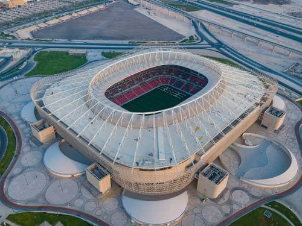

Las sedes del mundial
Al Thumama Stadium
Situado a 12 km al sur de Doha, el diseño del estadio Al Thumama entreteje la cultura árabe a través de su fachada, inspirándose en los patrones tejidos de una Gahfiya, el tocado tradicional que llevan los hombres musulmanes de la región árabe. Además de su diseño, el entorno del proyecto explora la importancia de la arquitectura ecológica y contextual, apuntando a la certificación de 4 estrellas del Global Sustainability Assessment System Trust (GSAS) tanto para el diseño como para la construcción. El estadio garantiza el ahorro de un 40% más de agua dulce en comparación con un estadio convencional, utilizando agua reciclada para regar las zonas verdes. En el diseño se han integrado 50.000 metros cuadrados de parque, utilizando árboles autóctonos para cubrir el 84% del paisaje. El estadio se inauguró durante la 49ª final de la Copa Amir, el 22 de octubre de 2021.
Al Janoub Stadium
En 2013, Zaha Hadid Architects fue seleccionada para trabajar junto a AECOM en el diseño y la construcción del Estadio Al Janoub (anteriormente conocido como Estadio Al Wakrah). Construido en Al Wakrah, una de las zonas habitadas más antiguas del sur de Doha y enclavado en un rico emplazamiento cultural con un profundo patrimonio arqueológico, el diseño se inspira en la historia de la ciudad del buceo de perlas, la pesca y los barcos dhow tradicionales. El estadio, con capacidad para 40.000 espectadores, se inauguró el 16 de mayo de 2019, coincidiendo con la final de la Copa Amir. Después de la Copa Mundial, la capacidad del estadio se reducirá a 20.000 asistentes, mientras que los otros 20.000 asientos se donarán a proyectos de desarrollo del fútbol en el extranjero. Instalaciones de hostelería y recreo, así como una escuela, un salón de actos, pistas de ciclismo, equitación y atletismo son algunos de los nuevos servicios que se están desarrollando junto al estadio para garantizar su uso a largo plazo.
Al Bayt Stadium
Inspirado en las tiendas nómadas tradicionales, el estadio, con capacidad para 60.000 espectadores, albergará el partido inaugural de la Copa Mundial de la FIFA 2022™ y los encuentros hasta las semifinales. Situado en la ciudad norteña de Al Khor, una ciudad famosa por el buceo y la pesca de perlas que ha invitado a los habitantes del desierto a la costa a lo largo de los años, el diseño del estadio honra el pasado y el presente de Qatar, destacando la cultura, las tradiciones y la historia de la ciudad. Al igual que las tiendas de campaña de los nómadas, la grada superior de los asientos de diseño modular es portátil, y se retirará tras el campeonato, para entregarla a países en desarrollo que necesiten infraestructuras deportivas. El diseño del estadio fue revelado a mediados de 2014 por el Supreme Committee for Delivery & Legacy (SC) y la Aspire Zone Foundation, y fue inaugurado a principios de 2020, coincidiendo con el Día Nacional del Deporte de Qatar.

Ahmad bin Ali Stadium
Sede de uno de los equipos de fútbol más célebres de Qatar, en la ciudad de Al Rayyan, el estadio Ahmad bin Ali celebra su estrecha comunidad incorporando símbolos de la cultura y las tradiciones qataríes. Una de las principales características del diseño es la fachada ondulada, hecha con patrones que caracterizan diferentes aspectos del país, como "la importancia de la familia, la belleza del desierto, la flora y la fauna autóctonas, así como el comercio local e internacional". 40.000 aficionados estarán protegidos por una marquesina ligera y sistemas avanzados de refrigeración que garantizarán un confort óptimo durante los partidos. Calificado como la "puerta del desierto", el estadio abrirá sus puertas en diciembre de 2020 durante la final de la Copa Amir.
Education City Stadium
Situado en un vibrante centro de conocimiento e innovación, el Estadio de la Ciudad de la Educación está rodeado de instalaciones académicas y organizaciones deportivas. Debido a su particular ubicación en la Ciudad de la Educación, la estructura se ha diseñado cuidadosamente prestando gran atención a la accesibilidad. Durante la construcción, las excavadoras descubrieron rocas que se remontan a 20-30 millones de años, lo que les obligó a excavar 17 metros más abajo, para que el campo pueda situarse por debajo del nivel del mar, donde las temperaturas son más frescas. La fachada presenta patrones triangulares, una reimaginación de los patrones arabescos tradicionales, que parecen cambiar de color durante el día siguiendo el movimiento del sol en el cielo. El diseño se reveló en 2014, y se completó y abrió al público en 2020.
Stadium 974
Considerado como uno de los diseños de estadios más innovadores de los ocho presentados, el Estadio 974, antes conocido como Ras Abou Aboud, está inspirado en el comercio internacional y la navegación de Qatar. El número "974" también es muy significativo para el proyecto, ya que es el código de marcación internacional de Qatar, así como el número de contenedores marítimos utilizados en su construcción. La estructura está situada en la orilla, frente al horizonte de la Bahía Oeste de Doha. Dado que está hecho principalmente de contenedores de transporte, el estadio, con capacidad para 40.000 personas, se desmontará por completo una vez finalizada la Copa Mundial, y se utilizará como urbanización frente al mar para la comunidad local. El estadio fue inaugurado el 20 de noviembre de 2021, mediante una presentación digital.
Khalifa International Stadium
Construido en 1976 en Al Rayyan, el Khalifa International Stadium es desde hace tiempo uno de los estadios más notables, ya que ha albergado los Juegos Asiáticos, la Copa del Golfo Pérsico y la Copa Asiática de la AFC, entre otros eventos. Para este evento, el estadio se ha ampliado para dar cabida a 40.000 aficionados y se ha equipado con una "innovadora tecnología de refrigeración" que permitirá a los jugadores competir en un entorno confortable. En la estructura se ha añadido un techo único para albergar las zonas de asiento, junto con una nueva estructura en el ala este que albergará zonas de restauración, tiendas, salas polivalentes, salones VIP, un museo y un centro de salud. La ceremonia de reapertura del estadio tuvo lugar en 2017.
Lusail Stadium
El estadio de Lusail, con capacidad para 80.000 espectadores, es la mayor de las ocho estructuras, y acogerá la final de la Copa Mundial de la FIFA Qatar 2022™. El diseño se inspira en el juego de luces y sombras de la linterna Fanar. La forma estructural y la fachada se hacen eco de los intrincados motivos de las piezas de arte y mobiliario encontradas en todo el mundo árabe e islámico durante las primeras civilizaciones. Debido a su prominente ubicación en Lusail, una metrópolis de reciente construcción, la planificación general del estadio cuenta con un sistema de tranvía y exuberantes espacios verdes, lo que lo convierte en un escenario centrado en la sostenibilidad, en las necesidades humanas y la conservación del medio ambiente. Una vez finalizado el evento, se transformará en un centro comunitario polivalente con escuelas, tiendas, cafeterías, instalaciones deportivas y clínicas de salud. El estadio se inauguró a finales de 2021.